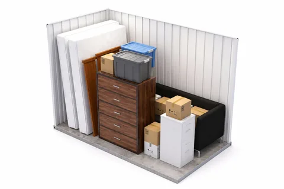
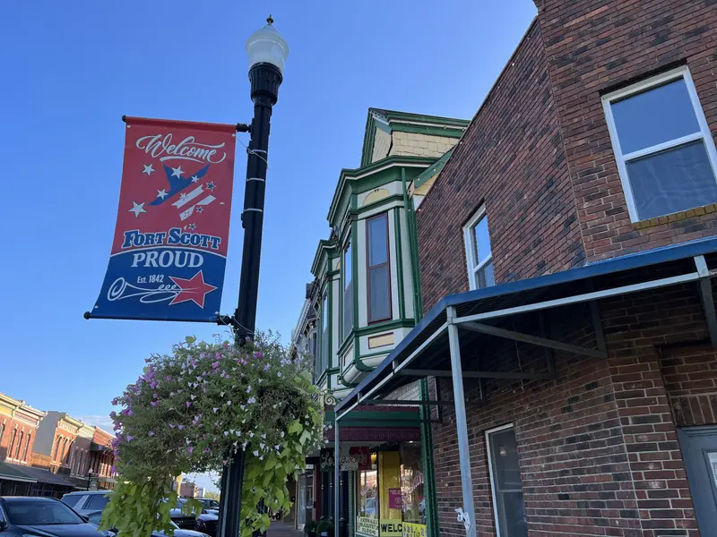

A Student's Guide to Storage in Hutchinson
Summer storage, shared units, sizes and prices for HutchCC students.

Most Hutchinson Community College students hit the same problem at the end of spring semester: housing ends, the next place doesn’t start until fall, and everything you own has to go somewhere in between. You can haul it home and back, or you can leave it in Hutchinson for the summer. Here is what the second option costs, what size to rent, and how to share a unit without falling out with your roommate.
What Summer Storage Costs at Each Location
Reno County Storage has two locations: 2511 E 17th Ave in Hutchinson and 712 N Walnut St in South Hutchinson, across the Arkansas River. Look both up on a map from where you live and pick the easier drive. The regular monthly rates for the sizes students use are:
- 5×10: $65 a month in Hutchinson, $55 in South Hutchinson. Three months comes to $195 or $165.
- 8×10: $85 a month, Hutchinson only. Three months comes to $255.
- 10×10: $95 a month in Hutchinson, $65 in South Hutchinson. Three months comes to $285 or $195.
Rent is month-to-month with no long-term contract, and a lock is included free, so there is nothing else to buy. Count the months before you budget: if your things go in before finals and come out after fall move-in, that can be four monthly payments, not three. These rates are current at the time of writing and can change, so check current prices for both locations.
Reno County Storage is veteran-owned and gives 15% off to active duty military, veterans and first responders. If you are a student veteran, ask for it when you rent.
Which Size Fits a Student

A 5×10 is the size of a walk-in closet. It takes a mattress and box spring, a dresser, a bike and a stack of boxes, which covers one student’s room.
An 8×10 is sized for a studio apartment. Choose it if you have your own place with a small sofa, a desk and kitchen gear.
A 10×10 holds a one-bedroom apartment: sofa, dining set, bed, washer and dryer. It is the one to split between two people.
If you are between two sizes, list your furniture first and count boxes second. Furniture decides the size. The size guide has the full list for each unit.
Splitting a Unit With a Roommate
Sharing a 10×10 is the cheapest way to store two people’s things. Split evenly, it works out to $47.50 each per month in Hutchinson or $32.50 each in South Hutchinson, which is less than either of you would pay for your own 5×10.
Sort out four things before you sign:
- Whose name is on the lease. One person signs and pays, and that person is responsible for the unit. Agree on how and when the other pays them back.
- Who holds the keys. Decide who keeps the lock keys over the summer and how the other gets in if they are back in town first.
- Which side is whose. Split the unit left and right, leave a walkway down the middle, and write a name on every box.
- The move-out date. Notice is due before the end of the month. If one of you empties out weeks before the other, the lease holder is still paying.
What to Store and What to Take Home
The units are insulated, but they are not climate-controlled, and Kansas summers are hot and humid. Furniture, bedding, kitchenware, clothes and books do fine for a summer if they go in clean and dry. Some things should ride home with you instead:
- Your laptop, tablet and anything with files you can’t replace.
- Documents: ID, financial aid paperwork, anything with an account number on it.
- Jewelry, watches and cash.
- Candles, aerosols and anything that melts or leaks in heat.
- Food of any kind, including sealed snacks. It attracts pests.
Two items cause most of the trouble by the end of summer. Defrost the mini fridge, wipe it dry and store it with the door propped open. Put the mattress in a breathable cover, not sealed plastic, and stand it on a pallet or a couple of boards. Our post on protecting belongings from Kansas humidity goes further.
Renting and Paying From Your Phone
You do not need to fit a storage errand around finals. Pick a unit online at Hutchinson or South Hutchinson, sign the lease, pay, and you get access right away. Rent is paid through the online tenant portal by card, Cash App or ACH. Cash is not accepted, which is one less thing to arrange from home in July.
Every unit is ground level with a roll-up door, so you can park a car or a borrowed pickup at the door and carry things straight in. Both locations have cameras recording 24/7 and lighting on every aisle; the security page has the details.
Loading So Fall Move-In Takes One Trip
- Put what you need last at the back: winter coats, spare furniture, books.
- Put what you need on the first night at the front: bedding, towels, a lamp, the box with chargers and shower things.
- Stack heavy boxes low and stand the mattress along a side wall.
- Take one photo of the loaded unit before you pull the door down. By fall you will not remember where anything is.
Frequently Asked Questions
How much does summer storage cost for a college student in Hutchinson?
At the time of writing, a 5×10 at Reno County Storage is $65 a month in Hutchinson and $55 a month in South Hutchinson, so three months runs $195 or $165. A free lock is included. Prices can change, so check current rates before you rent.
What size storage unit do I need for a dorm room?
A 5×10 is enough for one student’s room. It is about the size of a walk-in closet and holds a mattress and box spring, a dresser, a bike and boxes. If you have a studio apartment’s worth of furniture, look at an 8×10.
Can two college roommates split one storage unit?
Yes. A 10×10 holds a one-bedroom apartment’s worth of furniture, which is usually enough for two students. One person signs the lease and is responsible for the unit, so agree up front on how the rent is split and when you will both move out.
Is it safe to store a mattress and electronics in a storage unit over a Kansas summer?
A mattress stores well if it is clean, dry, in a breathable cover and raised off the floor. The units are insulated but not climate-controlled, so take laptops, tablets and other heat-sensitive electronics home with you.
Do student veterans get a discount on storage in Hutchinson?
Yes. Reno County Storage is veteran-owned and gives a 15% discount to active duty military, veterans and first responders. Ask for it when you rent or call (620) 662-7336.
Not sure which size or which location fits your summer? Call or text (620) 662-7336, compare units in the size guide, or see both locations and current rates. Go Blue Dragons.
More from the Blog

5 Things People Forget When Renting a Storage Unit
Avoid common mistakes with these practical storage tips for first-time renters.

Moving to Hutchinson? Here's What You Need to Know
How the two sides of the river and the highways lay out, when to book the truck, and how storage covers a gap between homes.
How to Choose the Right Storage Unit Size
Every size and monthly price at both locations, from 5x10 to 20x40, and what fits in each.